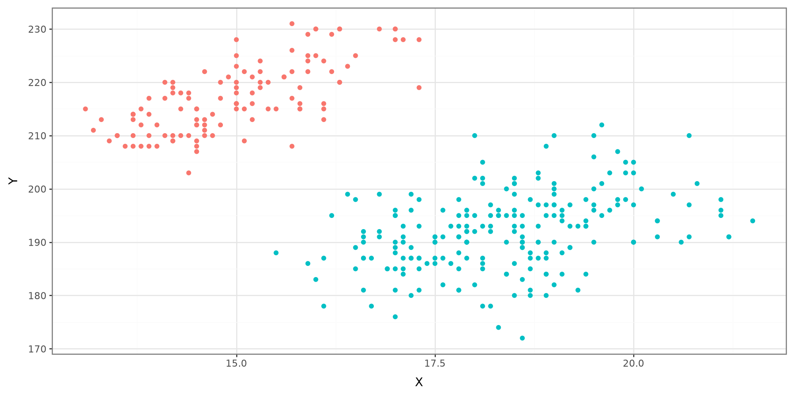
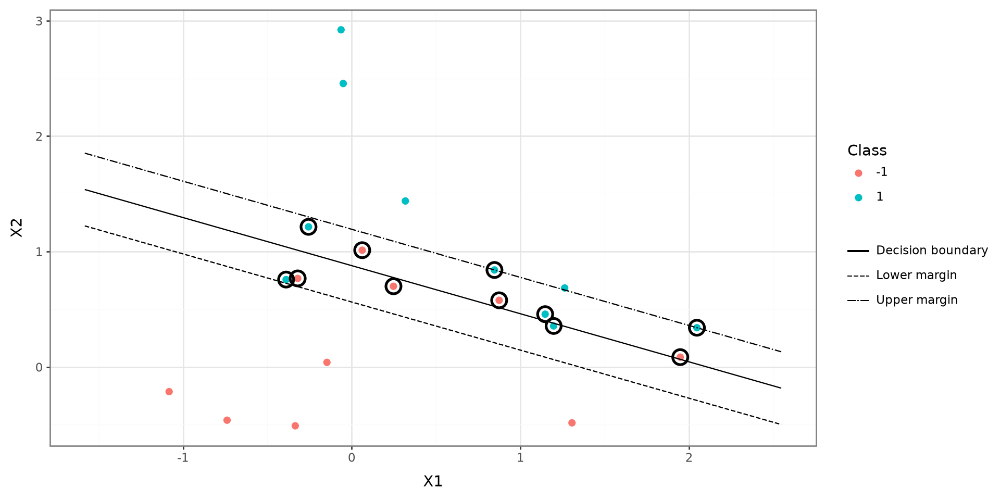
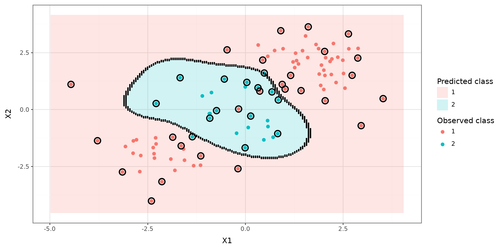

import numpy as np
import pandas as pd
from plotnine import (
aes,
geom_line,
geom_point,
geom_tile,
ggplot,
labs,
theme,
theme_bw,
)
from plotnine.data import penguins as penguins_raw
from sklearn.model_selection import GridSearchCV, StratifiedKFold
from sklearn.svm import SVC
# Palmer Penguins data used in the motivating examples.
penguins = (
penguins_raw
.assign(
gentoo=lambda df: np.where(df["species"] == "Gentoo", "A", "B")
)
.dropna()
.copy()
)
# Linear support-vector-classifier simulation.
rng_linear = np.random.default_rng(2434)
linear_x = rng_linear.normal(size=(20, 2))
linear_y = np.repeat([-1, 1], 10)
linear_x[linear_y == 1] += 1
linear_dat = pd.DataFrame(
{
"x1": linear_x[:, 0],
"x2": linear_x[:, 1],
"y": linear_y,
"class_label": linear_y.astype(str),
}
)
# Test observations for the linear classifier.
test_x = rng_linear.normal(size=(20, 2))
test_y = rng_linear.choice([-1, 1], size=20, replace=True)
test_x[test_y == 1] += 1
testdat = pd.DataFrame(
{
"x1": test_x[:, 0],
"x2": test_x[:, 1],
"y": test_y,
"class_label": test_y.astype(str),
}
)
# Nonlinear simulation used for the radial-kernel SVM.
rng_radial = np.random.default_rng(1)
radial_x = rng_radial.normal(size=(200, 2))
radial_x[:100] += 2
radial_x[100:150] -= 2
radial_y = np.concatenate([np.repeat(1, 150), np.repeat(2, 50)])
radial_dat = pd.DataFrame(
{
"x1": radial_x[:, 0],
"x2": radial_x[:, 1],
"y": radial_y,
"class_label": radial_y.astype(str),
}
)
train_indices = rng_radial.choice(radial_dat.index, size=100, replace=False)
radial_train = radial_dat.loc[train_indices].copy()
def make_prediction_grid(model, data, points=180, padding=0.5):
"""Create a dense two-dimensional grid and classify each grid point."""
x1_values = np.linspace(
data["x1"].min() - padding,
data["x1"].max() + padding,
points,
)
x2_values = np.linspace(
data["x2"].min() - padding,
data["x2"].max() + padding,
points,
)
x1_grid, x2_grid = np.meshgrid(x1_values, x2_values)
grid = pd.DataFrame(
{
"x1": x1_grid.ravel(),
"x2": x2_grid.ravel(),
}
)
grid["prediction"] = model.predict(grid[["x1", "x2"]]).astype(str)
return grid, x1_values, x2_values
def find_boundary_points(grid, x1_values, x2_values):
"""Find grid cells whose predicted class differs from a neighbor."""
predictions = grid["prediction"].to_numpy().reshape(
len(x2_values),
len(x1_values),
)
boundary = np.zeros_like(predictions, dtype=bool)
horizontal_change = predictions[:, 1:] != predictions[:, :-1]
vertical_change = predictions[1:, :] != predictions[:-1, :]
boundary[:, 1:] |= horizontal_change
boundary[:, :-1] |= horizontal_change
boundary[1:, :] |= vertical_change
boundary[:-1, :] |= vertical_change
return grid.loc[boundary.ravel(), ["x1", "x2"]].copy()Support Vector Machines
Python Setup
Learning Outcomes
- Maximal Margin Classifier
- Support Vector Classifier
- Python Code
Maximal Margin Classifier
Maximal Margin Classifier
Support Vector Classifier
Support Vector Machines
Python Code
Motivating Example

Maximal Margin Classifier
The Maximal Margin Classifier will impose a hyperplane on a graph that will classify the data given a vector of predictor variables.
Hyperplane
Given a p-dimensional space, a hyperplane is flat affine subspace of p-1 dimensions. It is mathematically defined as:
\[ \beta_0 + \beta_1X_1 + \beta_2 X_2 + \cdots+\beta_pX_p = 0 \]
Hyperplane

Constructing the Hyperplane
A hyperplane is constructed by maximizing the margin \(M\) of the data points that are farthest from the theoretical margin. The data points that define the outer edge of the margins are known as support vectors.

Optimization Problem
\(\overset{\mathrm{maximize}}{\tiny\beta_0, \beta_1,\ldots,\beta_p,M}\ \large M\)
subject to \(\sum^p_{j=1}\beta_j^2 = 1\)
\(y_i(\beta_0 + \beta_1X_{1i} + \beta_2 X_{2i} + \cdots+\beta_pX_{pi})\geq M \ \forall \ i=1,\ldots,n\)
Maximal Margin Classifier

Support Vector Classifier
Maximal Margin Classifier
Support Vector Classifier
Support Vector Machines
Python Code
Support Vector Classifier
Maximal Margin Classifiers have one fatal defect, the data points must be completely on one side of the margin. This does not allow room for error.
A Support Vector Classifier allows for data points to be misclassified if need be.
It achieves this by implementing a Cost mechanism, denoted as \(C\), to account for any errors for data points.
Support Vector Classifiers

Optimization Problem
\(\overset{\mathrm{maximize}}{\tiny\beta_0, \beta_1,\ldots, \beta_p,\epsilon_1,\ldots, \epsilon_n,M}\ \large M\)
subject to \(\sum^p_{j=1}\beta_j^2 = 1\)
\(y_i(\beta_0 + \beta_1X_{1i} + \beta_2 X_{2i} + \cdots+\beta_pX_{pi})\geq M (1-\epsilon_i) \ \forall \ i=1,\ldots,n\)
\(\epsilon_i\geq 0\)
\(\sum^n_{i=1} \epsilon_i \leq C\)
Budget C
The tuning parameter \(C\) is known as the budget parameter for error. When the data point is on the correct side of the margin, then it has an error of \(0\). When a data point in on the wrong side the margin, it has a bit of error. When the data point is on the opposite side of the hyperplane, then it has an error greater than \(1\). This is allowed as long as the sum of errors are less than or equal to \(C\).
Support Vector Machines
Maximal Margin Classifier
Support Vector Classifier
Support Vector Machines
Python Code
Motivating Example
Motivating Example

Support Vector Machines
A Support Vector Machine will create a nonlinear boundary instead of a line.
It incorporates a kernel function that will compute the similarities between two support vectors.
The kernel function can be loosely claimed how the data is modeled.
Nonlinear Boundary

Nonlinear Boundary

Support Vector Machines Kernels
Linear
Polynomial
Radial
Python Code
Maximal Margin Classifier
Support Vector Classifier
Support Vector Machines
Python Code
Support Vector Classifier
linear_svm = SVC(
kernel="linear",
C=10,
)
linear_svm.fit(
linear_dat[["x1", "x2"]],
linear_dat["y"],
)
linear_support = linear_dat.iloc[linear_svm.support_].copy()
# The decision boundary is where the decision function equals 0.
# The two margins are where it equals -1 and 1.
line_x1 = np.linspace(
linear_dat["x1"].min() - 0.5,
linear_dat["x1"].max() + 0.5,
200,
)
weights = linear_svm.coef_[0]
intercept = linear_svm.intercept_[0]
boundary_lines = pd.concat(
[
pd.DataFrame(
{
"x1": line_x1,
"x2": (level - intercept - weights[0] * line_x1) / weights[1],
"line": label,
}
)
for level, label in [
(-1, "Lower margin"),
(0, "Decision boundary"),
(1, "Upper margin"),
]
],
ignore_index=True,
)
(
ggplot(linear_dat, aes(x="x1", y="x2", color="class_label"))
+ geom_point(size=2)
+ geom_line(
data=boundary_lines,
mapping=aes(x="x1", y="x2", linetype="line", group="line"),
color="black",
inherit_aes=False,
)
+ geom_point(
data=linear_support,
mapping=aes(x="x1", y="x2"),
shape="o",
fill="none",
size=5,
stroke=1.1,
color="black",
inherit_aes=False,
)
+ labs(x="X1", y="X2", color="Class", linetype="")
+ theme_bw()
)
linear_summary = pd.DataFrame(
{
"property": [
"Kernel",
"C",
"Training observations",
"Number of support vectors",
"Support vectors in class -1",
"Support vectors in class 1",
"Training accuracy",
],
"value": [
linear_svm.kernel,
linear_svm.C,
len(linear_dat),
len(linear_svm.support_),
linear_svm.n_support_[0],
linear_svm.n_support_[1],
linear_svm.score(
linear_dat[["x1", "x2"]],
linear_dat["y"],
),
],
}
)
linear_summary| property | value | |
|---|---|---|
| 0 | Kernel | linear |
| 1 | C | 10 |
| 2 | Training observations | 20 |
| 3 | Number of support vectors | 11 |
| 4 | Support vectors in class -1 | 5 |
| 5 | Support vectors in class 1 | 6 |
| 6 | Training accuracy | 0.75 |
Cross-Validation Approach for C
cv = StratifiedKFold(
n_splits=10,
shuffle=True,
random_state=2434,
)
cost_grid = {
"C": [0.001, 0.01, 0.1, 1, 5, 10, 100]
}
tune_out = GridSearchCV(
estimator=SVC(kernel="linear"),
param_grid=cost_grid,
scoring="accuracy",
cv=cv,
refit=True,
)
_ = tune_out.fit(
linear_dat[["x1", "x2"]],
linear_dat["y"],
)tuning_summary = (
pd.DataFrame(tune_out.cv_results_)
[["param_C", "mean_test_score", "std_test_score", "rank_test_score"]]
.rename(
columns={
"param_C": "C",
"mean_test_score": "mean_cv_accuracy",
"std_test_score": "sd_cv_accuracy",
"rank_test_score": "rank",
}
)
.sort_values("C")
.reset_index(drop=True)
)
tuning_summary| C | mean_cv_accuracy | sd_cv_accuracy | rank | |
|---|---|---|---|---|
| 0 | 0.001 | 0.75 | 0.250000 | 1 |
| 1 | 0.010 | 0.75 | 0.250000 | 1 |
| 2 | 0.100 | 0.70 | 0.331662 | 3 |
| 3 | 1.000 | 0.70 | 0.244949 | 3 |
| 4 | 5.000 | 0.65 | 0.229129 | 5 |
| 5 | 10.000 | 0.60 | 0.300000 | 7 |
| 6 | 100.000 | 0.65 | 0.229129 | 5 |
bestmod = tune_out.best_estimator_
best_model_summary = pd.DataFrame(
{
"property": [
"Best C",
"Best mean CV accuracy",
"Kernel",
"Number of support vectors",
"Training accuracy",
],
"value": [
tune_out.best_params_["C"],
tune_out.best_score_,
bestmod.kernel,
len(bestmod.support_),
bestmod.score(
linear_dat[["x1", "x2"]],
linear_dat["y"],
),
],
}
)
best_model_summary| property | value | |
|---|---|---|
| 0 | Best C | 0.001 |
| 1 | Best mean CV accuracy | 0.75 |
| 2 | Kernel | linear |
| 3 | Number of support vectors | 20 |
| 4 | Training accuracy | 0.85 |
Prediction
# These test observations are generated in the setup chunk.
test_x = rng_linear.normal(size=(20, 2))
test_y = rng_linear.choice([-1, 1], size=20, replace=True)
test_x[test_y == 1] += 1
testdat = pd.DataFrame(
{
"x1": test_x[:, 0],
"x2": test_x[:, 1],
"y": test_y,
"class_label": test_y.astype(str),
}
)Python Code: SVM
# This nonlinear simulation and train/test split are executed in setup.
rng_radial = np.random.default_rng(1)
x = rng_radial.normal(size=(200, 2))
x[:100] += 2
x[100:150] -= 2
y = np.concatenate([np.repeat(1, 150), np.repeat(2, 50)])
radial_dat = pd.DataFrame(
{
"x1": x[:, 0],
"x2": x[:, 1],
"y": y,
"class_label": y.astype(str),
}
)
train_indices = rng_radial.choice(radial_dat.index, size=100, replace=False)
radial_train = radial_dat.loc[train_indices].copy()radial_svm = SVC(
kernel="rbf",
gamma=1,
C=1,
)
radial_svm.fit(
radial_train[["x1", "x2"]],
radial_train["y"],
)
radial_grid, radial_x1_values, radial_x2_values = make_prediction_grid(
radial_svm,
radial_train,
)
radial_boundary = find_boundary_points(
radial_grid,
radial_x1_values,
radial_x2_values,
)
radial_support = radial_train.iloc[radial_svm.support_].copy()
(
ggplot()
+ geom_tile(
data=radial_grid,
mapping=aes(x="x1", y="x2", fill="prediction"),
alpha=0.18,
)
+ geom_point(
data=radial_train,
mapping=aes(x="x1", y="x2", color="class_label"),
size=2,
)
+ geom_point(
data=radial_boundary,
mapping=aes(x="x1", y="x2"),
size=0.25,
color="black",
inherit_aes=False,
)
+ geom_point(
data=radial_support,
mapping=aes(x="x1", y="x2"),
shape="o",
fill="none",
size=4,
stroke=1,
color="black",
inherit_aes=False,
)
+ labs(
x="X1",
y="X2",
color="Observed class",
fill="Predicted class",
)
+ theme_bw()
)